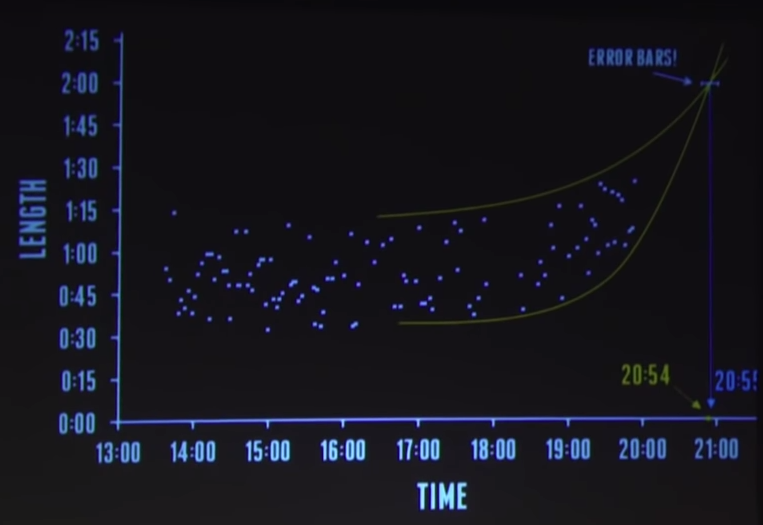
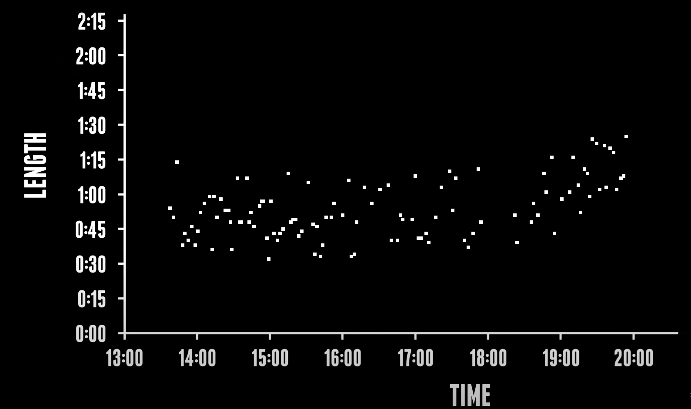
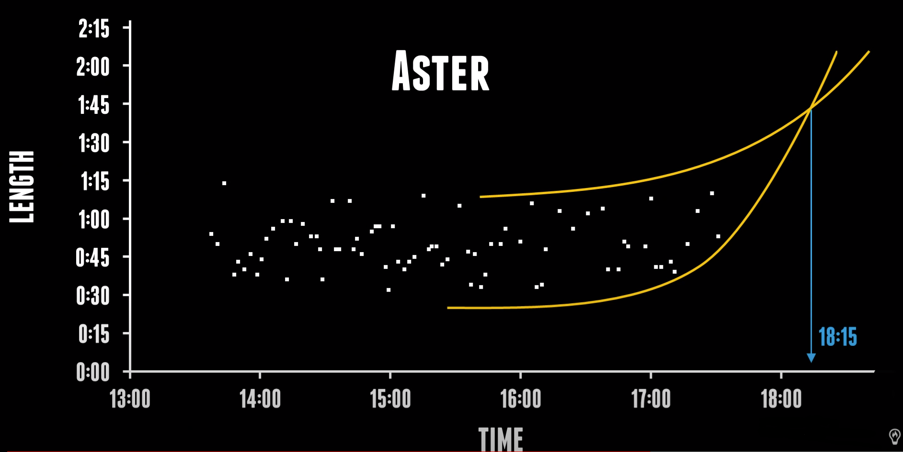

Steve Mould was able to predict his child's delivery time twice using his wife's contraction data.
I predicted the exact time of my daughter's birth using science and data - from Just For Graphs
Using the data from his video:



I hope to put together a tool to help you predict your child's birth.